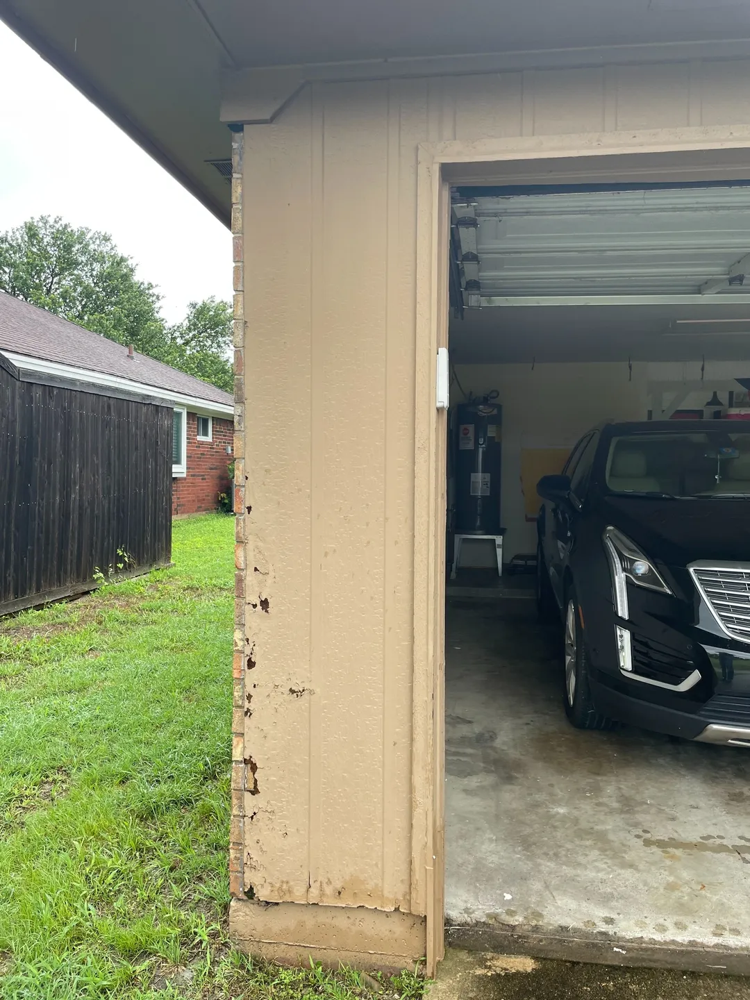

A roof is the one thing on your house you hope you never have to think about, which makes it our job to think about it for you. Roof repair in Plano TX covers the small, fixable problems that show up long before a roof needs replacing, things like a few cracked or missing shingles, worn flashing around a chimney, a lifted ridge cap, or a slow leak in one spot. We are Jackson Roofing, a family business on North Texas roofs since 2000, and most of what we see is a repair, not a replacement.
Book a free, no obligation roof inspection and we will show you photographs of what is actually up there before you decide anything.
What does roof repair in Plano include?
Most Plano repairs come down to shingles, flashing, or sealing, not the whole roof. Replacing a handful of shingles the wind lifted, resealing flashing that dried out in the heat, securing a loose ridge cap, or tracing and fixing a single leak are the everyday jobs.

The reason repair matters here is simple. Our summers bake shingles for months, our springs bring hail, and both work on the weak spots first. A shingle that lost its granules to two Texas summers, or a flashing joint that cracked in the sun, is a small fix today and a soaked attic after the next hard rain. We would rather patch the weak spot in calm weather than meet you after the water is already inside.
- Missing, cracked, or wind-lifted shingles
- Worn or loose flashing around chimneys, vents, and valleys
- Cracked or lifted ridge caps along the peak
- A single leak traced back to its source
- Resealing and small penetrations that dried out in the heat
What are the signs my roof needs repair?
The clearest signs are things you can spot from the ground: missing or curling shingles, dark bald patches, grit in the gutters, or a stain on an interior ceiling. Any one of those is worth a closer look.
Here is what we tell Plano homeowners to watch for:
- Shingles that are missing, cracked, or curling. Visible from the driveway, and an open door for water.
- Granules in the gutters or at the downspout. A shingle sheds its protective grit as it ages. A lot of grit means the surface is wearing thin.
- Flashing that looks loose or rusted. The metal around chimneys, vents, and valleys is where most leaks actually start, not the open field of the roof.
- A ceiling or attic stain. Even a small brown ring means water is getting past the roof somewhere. It will get worse in the next storm.
- Daylight in the attic. If you can see light through the roof boards, water can get in the same way.
Can my roof be repaired instead of replaced?
Often, yes, and we will tell you honestly when it can. A roof under 15 years old with an isolated problem, a leak in one valley or a patch of storm-struck shingles, is usually a repair, not a replacement.
We do not push a new roof on someone who needs a five-shingle fix. About half our inspections end with us saying the roof is fine. That is a terrible sales strategy, and we do it anyway. When a roof is past its life or the damage runs across several sections, we will say that too, and show you the photos so you can see why. If it turns out a full replacement is the smarter call, our roof replacement page walks through that side of the decision.
How fast can you get out after a storm in Plano?
We prioritize active leaks and aim to get out fast, though a big storm keeps every honest roofer in the area busy for a week or two. If water is coming in, tell us when you call so we can move you up the list.
After a hailstorm rolls through Plano or the rest of Collin County, half the neighborhood calls the same week. The trucks that fan out across a neighborhood the morning after a storm are not there to admire the landscaping. We work the emergencies first, get a temporary cover on active leaks when we cannot do the full fix that day, and schedule the rest in order. We have been here since 2000 and we will be here next season too.
Which North Texas cities do you cover for roof repair?
We repair roofs across North DFW. Our home base is Plano, and we cover the surrounding cities every week: Frisco, McKinney, Allen, Richardson, Garland, Wylie, Murphy, Rockwall, and Sachse, plus the extended towns of Prosper, Celina, Little Elm, Lucas, Fairview, and Coppell.
We have dedicated roof repair pages for Allen, Frisco, McKinney, Richardson, and Rockwall. Tell us where you are when you get in touch. We already work your street.
What Jackson Roofing does about it
We are a family business that has handled roof repair across Plano and North DFW since 2000, with our own crews on every job. Every repair starts with a free inspection and photos of what we find, so you see the problem before you approve any work. We give you a written quote, we do not pressure you to sign the same day, and we run a magnetic nail sweep across your yard and driveway at cleanup. You can see the full range of what we do on our services overview, and we will set up a look whenever you are ready.
Frequently asked questions
How much does roof repair cost in Plano?
It depends on the problem, from a small shingle-and-sealant fix to tracing a stubborn leak. We give you the number in writing after a free inspection, and we do not start work until you approve it.
Do you offer free roof repair estimates in Plano?
Yes. Inspections and estimates are free with no obligation. If the roof only needs a minor fix, we will say so.
Is a small roof leak an emergency?
It is worth acting on quickly. A small leak rarely stays small in our storms, and water that reaches the decking and drywall costs far more than the original fix.
Should I repair or replace an older roof?
A roof under 15 years old with damage in one spot is usually a repair. A roof past its life or damaged across several areas is usually better replaced. We will give you the honest call after we look.
Get a free, no-obligation inspection
Noticed a missing shingle, a ceiling stain, or grit in the gutters? Book a free, no obligation roof inspection anywhere in Plano, Frisco, McKinney, Allen, or the surrounding North DFW towns. We show you photos of what we find and give you a straight answer about whether you need a repair at all. No pressure either way.